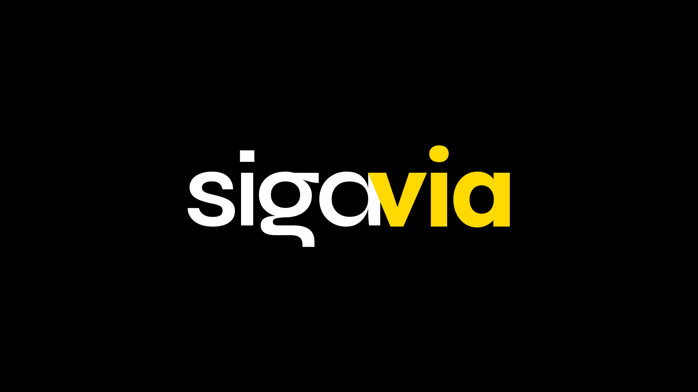
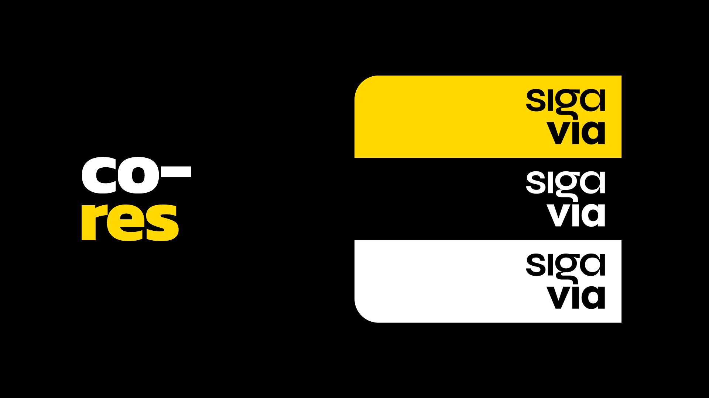
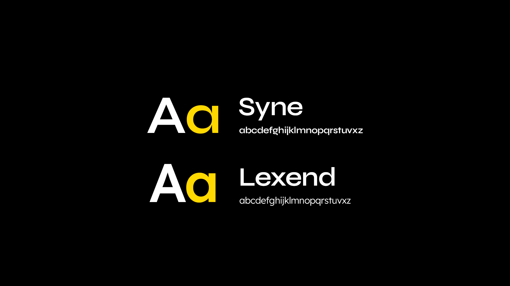
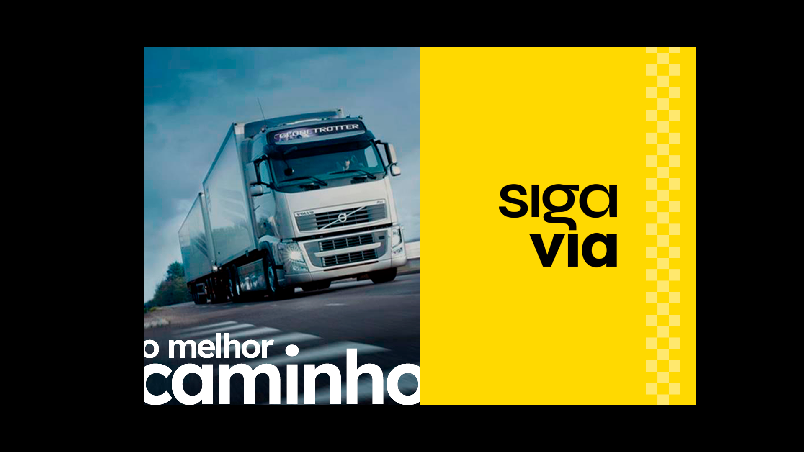
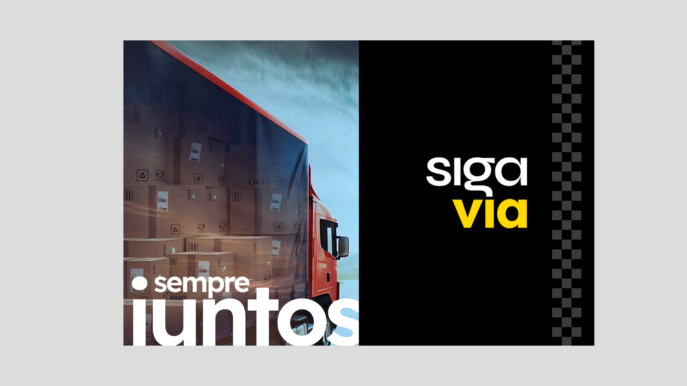
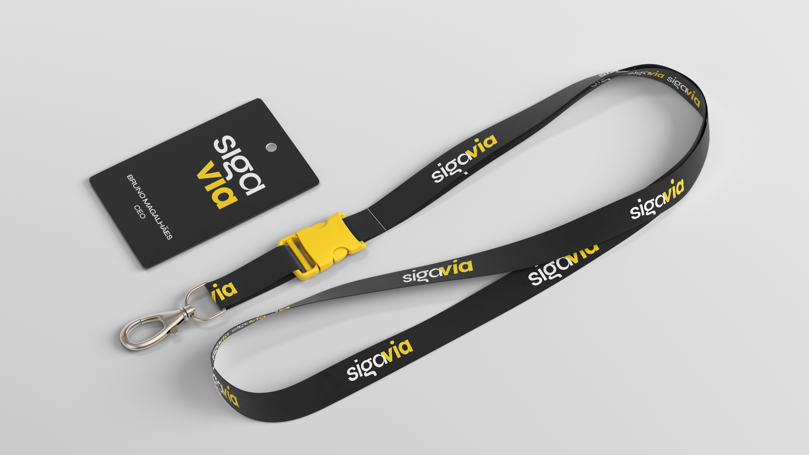
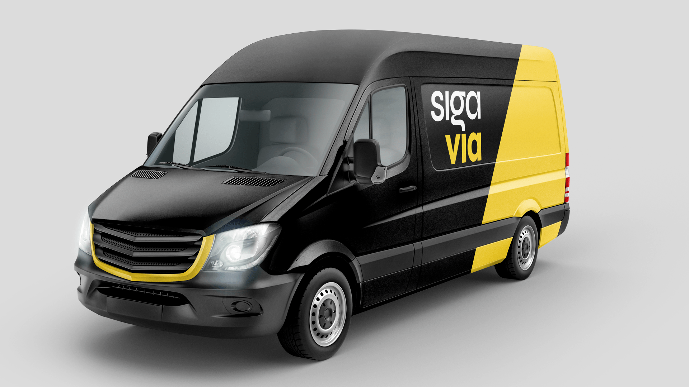
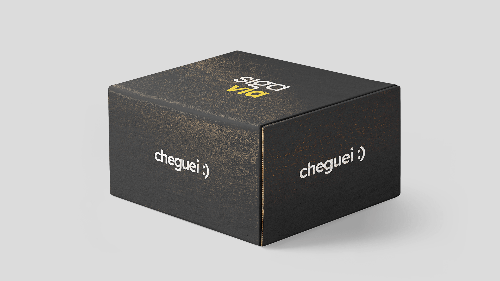
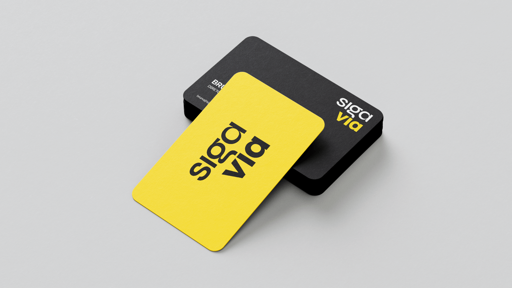

Confiável
Uma presença visual sólida, direta e consistente para transmitir segurança na comunicação.
08 — Siga Via

Contexto
O projeto Siga Via explora no próprio nome a ideia de caminho, deslocamento e continuidade. A identidade precisava sustentar essa percepção com uma linguagem direta, reconhecível e adequada a diferentes pontos de contato.
O sistema combina alto contraste, tipografia de presença e uma paleta enxuta de preto, branco e amarelo para criar uma marca simples de identificar tanto em materiais institucionais quanto em aplicações ligadas à operação.
Conceito
A linguagem verbal reforça a relação entre marca e percurso. Em vez de construir um universo visual complexo, a identidade se apoia em poucos elementos de forte reconhecimento: nome, contraste, ritmo tipográfico e amarelo como sinal de destaque.
Essa redução permite que o sistema mantenha personalidade mesmo quando aplicado em escalas, fundos e formatos muito diferentes.
Uma presença visual sólida, direta e consistente para transmitir segurança na comunicação.
Uma marca com linguagem própria e disposição para propor uma experiência mais clara e contemporânea.
Contraste e legibilidade ajudam a manter a identidade reconhecível em diferentes aplicações.
Sistema visual
As variações da marca foram pensadas para preservar contraste e leitura em fundos claros, escuros e amarelos. O amarelo funciona como o principal elemento de ativação do sistema, enquanto preto e branco estruturam a base.
A tipografia complementa o caráter contemporâneo da marca e cria contraste entre títulos de maior presença e informações de apoio.


Aplicações
O sistema foi explorado em peças ligadas ao universo logístico e em materiais institucionais, testando a marca em contextos de grande escala, itens de uso cotidiano e objetos de contato direto.
As aplicações preservam o mesmo repertório: grandes áreas pretas, amarelo como sinalização e tipografia assumindo papel central na composição.






Fechamento
A identidade conecta nome, cor, tipografia e aplicações em uma linguagem visual coesa, preparada para transitar entre comunicação institucional e o ambiente operacional da marca.
Estou aberto a novas oportunidades, projetos e boas conversas.